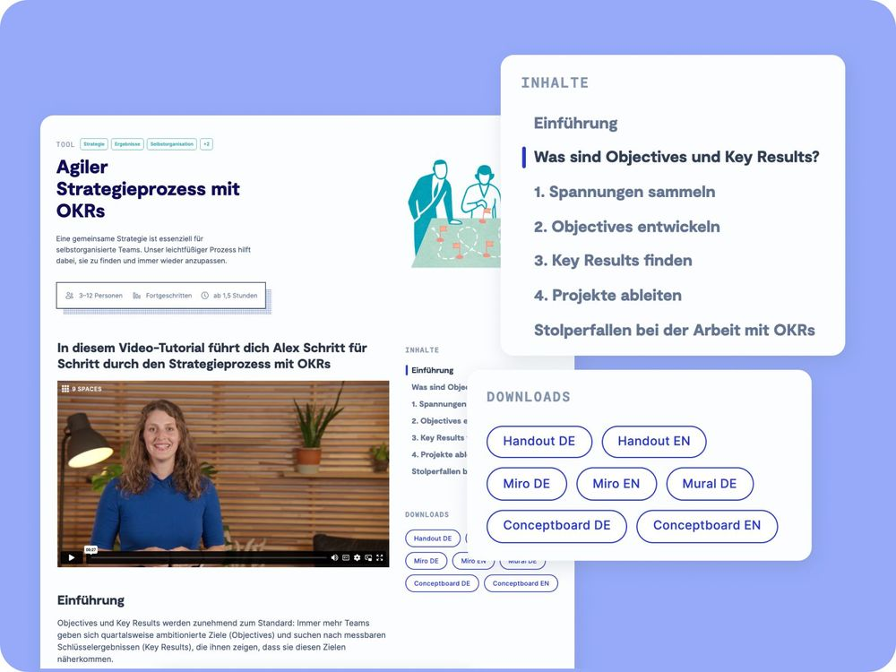

Produkt-Update #4: Unsere Tool-Seiten haben ein Upgrade bekommen
Alle wichtigen Infos und die Anleitung zu jedem Workshop findest du ab sofort an einem Ort – der Tool-Seite. Übersichtlich und für alle deine Geräte optimiert.
Was bedeutet das für dich?
-
Alles auf einen Blick und noch barriereärmer: Du findest jetzt alle Inhalte zum Tool direkt auf den neuen Workshop-Seiten – kein Hin- und Herwechseln mehr zwischen PDF und Tool-Seite.
-
Gezielte Navigation: Mit dem neuen dynamischen Inhaltsverzeichnis kannst du direkt zu den Abschnitten springen, die dich wirklich interessieren.
-
Praktische Handouts: Jedes Tool gibt's auch als handliches PDF – perfekt, wenn du offline arbeiten oder etwas im Team teilen möchtest.
-
Passende Empfehlungen: Wir zeigen dir zu jedem Tool hilfreiche Tipps und drei weitere Workshops, die super dazu passen könnten.

So nutzt du die neuen Tool-Seiten
Scrolle dich jetzt durch die neuen Tool-Seiten

Neugierig auf mehr?
Neue Features und Verbesserungen warten auf dich – schau rein und entdecke, was sonst noch alles neu auf 9 Spaces ist!